Blackpink (thường được viết cách điệu là BLACKPINK hoặc BLΛƆKPIИK) là nhóm nhạc nữ Hàn Quốc do công ty YG Entertainment thành lập và quản lý.
Nhóm gồm 4 thành viên Jisoo, Jennie, Rosé, Lisa. Blackpink chính thức ra mắt với album đĩa đơn đầu tay mang tên Square One gồm hai ca khúc "Boombayah" và
"Whistle".
Cả hai sau đó đã lọt vào bảng xếp hạng World Digital Songs của Billboard và bảng xếp hạng nhạc số Gaon của Hàn Quốc.
Các bài hát từ 2016-2022 của nhóm (bao gồm cả solo của các thành viên trong nhóm) :
BLACKPINK - '붐바야 (BOOMBAYAH)' (08/08/2016)

BLACKPINK - '휘파람 (WHISTLE)' (08/08/2016)
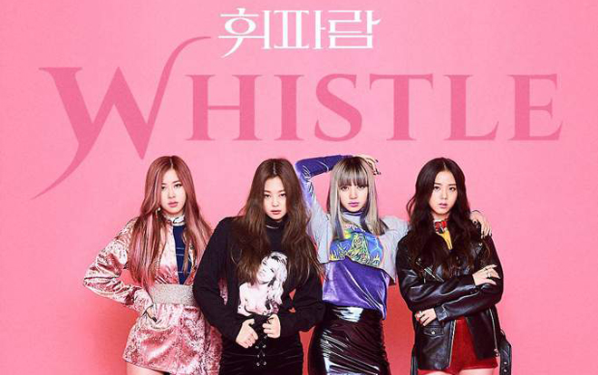
BLACKPINK - '불장난 (PLAYING WITH FIRE)' (31/10/2016)
BLACKPINK - 'STAY' (31/10/2016)
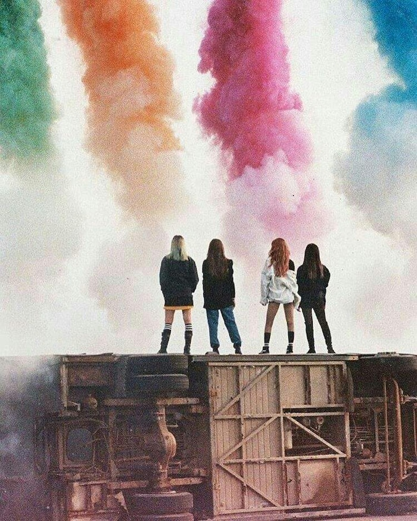
BLACKPINK - '마지막처럼 (AS IF IT'S YOUR LAST)' (22/06/2017)
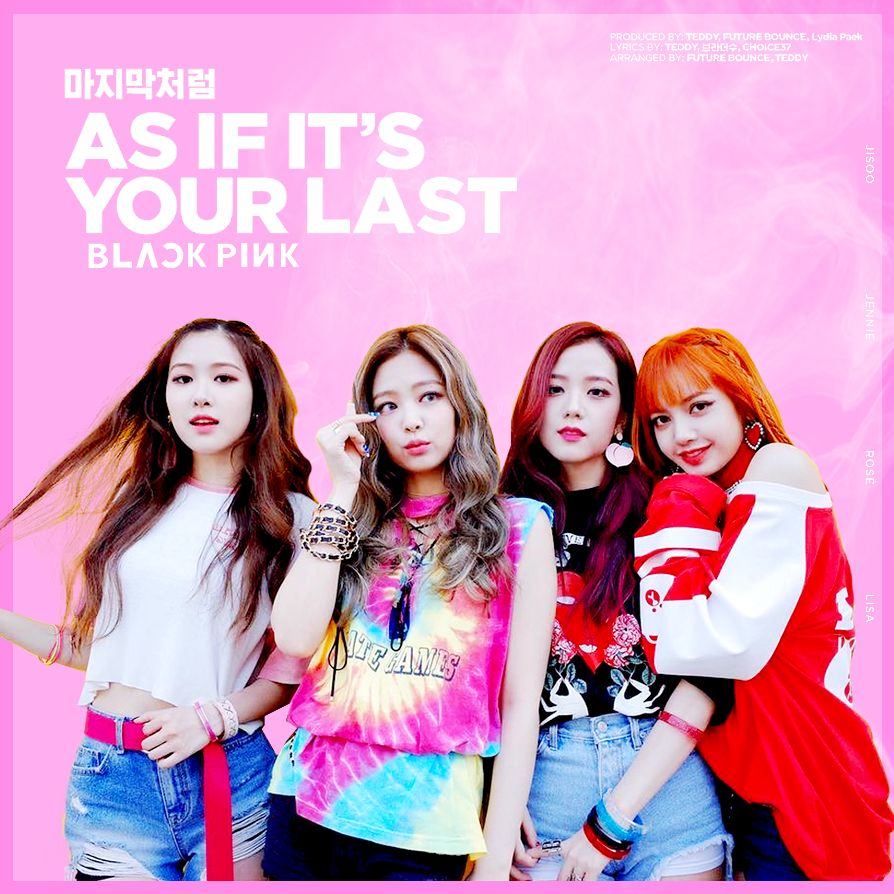
BLACKPINK - ‘뚜두뚜두 (DDU-DU DDU-DU)’ (15/06/2018)
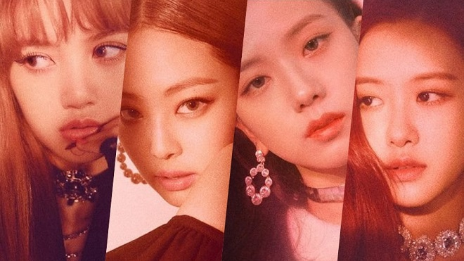
JENNIE - 'SOLO' (12/11/2018)
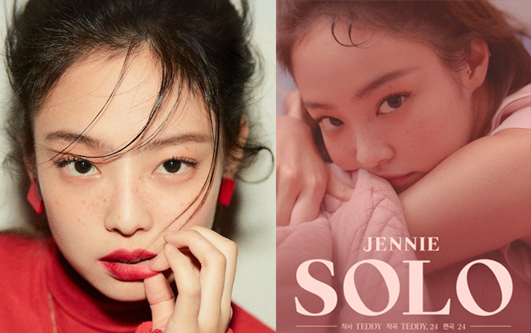
BLACKPINK - 'Kill This Love' (04/04/2019)
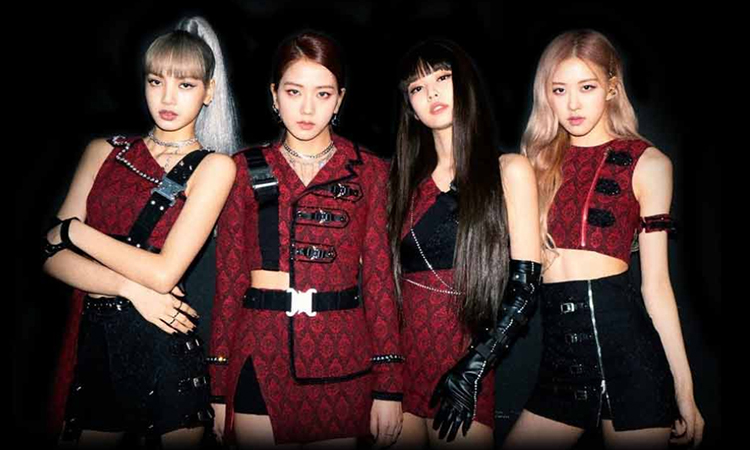
BLACKPINK - 'How You Like That' (26/06/2020)
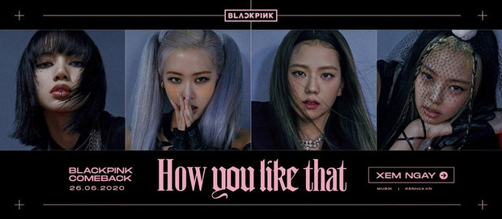
BLACKPINK - 'Ice Cream (with Selena Gomez)' (28/08/2020)
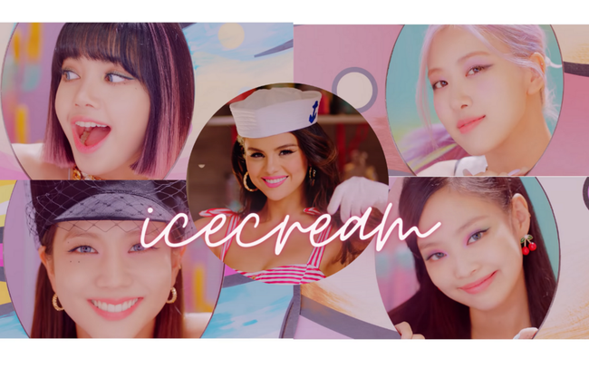
BLACKPINK - 'Lovesick Girls (02/10/2020)
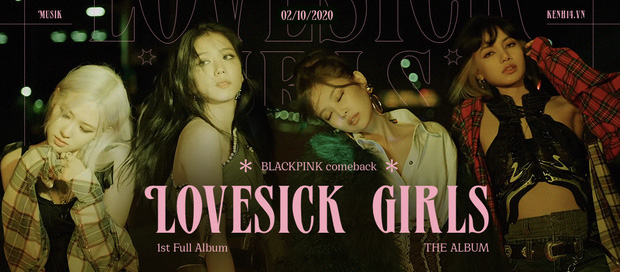
ROSÉ - 'On The Ground' (12/03/2021)
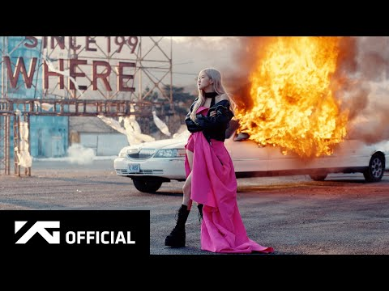
ROSÉ - 'Gone' (04/04/2021)
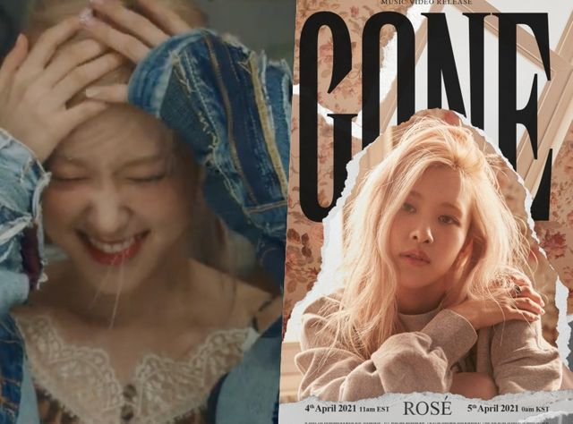
LISA - 'LALISA' (10/09/2021)

Blackpink được lên kế hoạch thành lập khi YG Entertainment tổ chức các buổi tuyển chọn những tân binh thuộc lứa tuổi vị thành niên và thanh thiếu niên trên toàn thế giới để thành lập một nhóm nhạc nữ mới sau khi nhóm nhạc nữ đầu tiên, 2NE1, ra mắt hồi năm 2009.
Theo các thành viên, việc tham gia YG với tư cách thực tập sinh tương tự như việc ghi danh vào một học viện ngôi sao nhạc pop làm việc cả ngày.
Jennie cho rằng nó "nghiêm ngặt hơn cả trường học" trong khi Rosé so sánh cuộc sống tại YG như The X Factor với phòng ký túc xá. Đối với những thành viên phải bỏ lại cuộc sống ở nước ngoài để tới Hàn Quốc, họ đối mặt với vô vàn gian nan khi phải thích nghi với nhịp độ luyện tập cùng với những cú sốc văn hóa. Công tác chuẩn bị cho Blackpink ra mắt bắt đầu từ năm 2011 khi YG Entertainment tiết lộ vào ngày 14 tháng 11 năm 2011 rằng nhóm nhạc nữ mới của công ty sẽ ra mắt vào nửa đầu năm 2012 với từ năm đến bảy thành viên.
Kể từ đó, có rất nhiều những tin tức và lời đồn xung quanh về nhóm nhạc nữ mới nhưng việc ra mắt của họ bị trì hoãn mà không có thông tin nào chính thức. Mãi đến ngày 18 tháng 5 năm 2016, YG Entertainment mới chính thức xác nhận việc đang chuẩn bị ra mắt nhóm nhạc nữ mới vào tháng 7. Một đại diện của YG đã nói rằng các thành viên đã được lựa chọn thông qua nhiều năm cạnh tranh gay gắt và các kỹ năng của họ đã được công nhận sau khi trải qua một thời gian dài luyện tập.
YG sau đó cũng xác nhận rằng những người trước đó được giới thiệu với công chúng như những thành viên tiềm năng của nhóm nhạc nữ mới là Jang Hanna (thí sinh của Kpop Star mùa 3) và Moon Sua (thí sinh của Unpretty Rapstar mùa 2) đã không có tên trong đội hình ra mắt.
Thành viên đầu tiên của nhóm được tiết lộ là Jennie vào ngày 1 tháng 6.Cô gia nhập YG Entertainment với tư cách là thực tập sinh vào năm 2010 sau khi trở về Hàn Quốc từ New Zealand. Năm 2012, cô lần đầu tiên được giới thiệu với công chúng qua bộ ảnh mang tên "Who's that girl?" được đăng tải lên blog chính thức của YG Entertainment vào ngày 10 tháng 4. Jennie liên tục được quảng bá với tư cách là thành viên của nhóm nhạc nữ mới qua những lần hợp tác với những nghệ sĩ khác cùng công ty. Cô từng đảm nhận vai chính trong video âm nhạc "That XX" năm 2012 từ EP One of a Kind của G-Dragon và từng góp giọng trong ca khúc "Black" từ album Coup d'etat của G-Dragon và trong "Special" từ album First Love của Lee Hi năm 2013.
Vào ngày 8 tháng 6, hình ảnh của thành viên thứ hai là Lisa được tiết lộ. Lisa chính là cô nàng bí ẩn gây nhiều ấn tượng với người hâm mộ trong đoạn video "Who's that girl?" mà YG đăng trên Youtube vào hồi năm 2012. Cô đã vượt qua buổi thử giọng đầu tiên vào năm 2010 của công ty tại Thái Lan. Với tư cách là người chiến thắng, cô là người duy nhất trong hơn 4000 thí sinh chính thức trở thành thực tập sinh của YG Entertainment vào tháng 4 năm 2011, trở thành thực tập sinh ngoại quốc đầu tiên gia nhập công ty. Lisa từng là thành viên của nhóm nhảy "We Zaa Cool" tại Thái Lan cùng với Bambam của Got7 và nhiều người bạn khác. Cô cũng xuất hiện trong video âm nhạc "Ringa Linga" của Taeyang vào năm 2013. Sau đó, Lisa trở thành người mẫu cho thương hiệu thời trang đường phố Nona9on vào năm 2015 và thương hiệu mỹ phẩm Moonshot vào năm 2016.
Vào ngày 15 tháng 6, YG tiết lộ là thành viên thứ ba là Jisoo.
Cô gia nhập YG Entertainment với tư cách là thực tập sinh vào tháng 7 năm 2011.
Jisoo trong những năm trước khi ra mắt đã từng xuất hiện trong một số quảng cáo và video âm nhạc, bao gồm "Spoiler + Happy Ending" (2014) từ album phòng thu Shoebox của Epik High và "I'm Different" của Hi Suhyun (2014).
Ngoài ra, Jisoo từng góp mặt trong bộ phim Hậu trường giải trí với vai trò là diễn viên khách mời. Rosé là thành viên được tiết lộ cuối cùng vào ngày 22 tháng 6. Cô đứng đầu trong số 700 ứng viên tham gia buổi thử giọng của YG Entertainment năm 2012 tại Úc, sau đó ký hợp đồng với công ty và chuyển đến Seoul vào tháng 4 năm đó và bắt đầu quãng thời gian làm thực tập sinh. Rosé từng góp giọng trong ca khúc "Without You" từ EP One of a Kind của G-Dragon vào năm 2012. Tuy nhiên, cô chỉ được đề cập dưới "? từ nhóm nhạc nữ mới của YG". Danh tính thực sự của Rosé vẫn được giữ kín trong gần 4 năm cho đến khi được chính thức giới thiệu công khai lần đầu tiên.
Chỉ đến khi đó YG mới tiết lộ rằng cô từng tham gia trong ca khúc trên.
Vào ngày 29 tháng 6, YG Entertainment xác nhận rằng nhóm nhạc nữ mới sẽ bao gồm bốn thành viên thay vì chín thành viên như dự kiến ban đầu của công ty, đồng thời tiết lộ Blackpink là tên chính thức của nhóm. Jisoo trong một cuộc họp báo sau đó đã tiết lộ rằng nhóm từng suýt nữa ra mắt với những tên gọi như "Pink Punk", "Baby Monster" hoặc "Magnum". Giải thích về tên gọi Blackpink, một đại diện của YG cho hay:
Ý nghĩa của tên gọi Blackpink là để phản bác lại cách nhìn nhận phổ biến về màu hồng. Hồng thường được sử dụng để thể hiện vẻ xinh đẹp nhưng Blackpink mang ý nghĩa "Xinh đẹp không phải là tất cả". Nó còn mang nghĩa biểu tượng rằng họ là một nhóm không chỉ sở hữu ngoại hình xinh đẹp mà còn cực kỳ tài năng và cá tính.
Ngày 6 tháng 7 năm 2016, YG tung ra video luyện tập vũ đạo đầu tiên của Blackpink trên nền nhạc bản remix ca khúc "Bitch Better Have My Money" của Rihanna. Clip đã thu về hàng triệu lượt xem cùng với hàng trăm nghìn lượt thích. Video quay lại màn vũ đạo của nhóm thực sự cho thấy khả năng nhảy của bốn cô gái nhà YG. Ngoài Lisa là thành viên đảm nhận vị trí nhảy chính thì các thành viên còn lại với vị trí hát và rap cũng nhận được nhiều lời khen ngợi về khả năng vũ đạo. Vào ngày 29 tháng 7, YG Entertainment xác nhận rằng Blackpink sẽ ra mắt vào ngày 8 tháng 8 năm 2016.
Nguồn: WIKIPEDIA